src.vitalwave package
Submodules
src.vitalwave.basic_algos module
- src.vitalwave.basic_algos.butter_filter(arr: ndarray, n: int, wn: ndarray, filter_type: str, fs: int) ndarray[source]
Performs zero-phase Butterworth filtering.
- Parameters:
- arr
Signal that will be filtered.
- n
Order of the filter.
- wn
Cutoff frequencies.
- filter_type
Type of the filter. Alternatives: lowpass, highpass, bandpass, bandstop.
- fs
Sampling frequency of the signal.
- Returns:
- arr_filtered
Filtered signal.
Examples
Without normalization:
basic_algos.butter_filter(arr=nd_ecg, n=4, wn=[0.5, 8], filter_type='bandpass', fs=fs)
With normalization:
basic_algos.min_max_normalize(basic_algos.butter_filter(arr=nd_ecg, n=4, wn=[0.5, 8], filter_type='bandpass', fs=fs))
- src.vitalwave.basic_algos.calculate_time_delay(arr_ecg: ndarray, arr_ppg: ndarray, peaks_ecg, fs: int) ndarray[source]
Calculate time delay between ECG and PPG signals based on corresponding peaks.
- Parameters:
- arr_ecg
ECG signal.
- arr_ppg
PPG signal.
- peaks_ecg
Peaks in the ECG signal.
- fs
Sampling frequency.
- key
Identifier, by default “id”.
- Returns:
- numpy.ndarray
Timestamps of corresponding PPG peaks.
Examples
To Syncronize ECG and PPG peaks discovery.
import numpy as np from vitalwave.example_data import load_biosignal import matplotlib.pyplot as plt limits = [0, 1000] time, ecg = load_biosignal(type="ECG") time, ppg = load_biosignal(type="ECG") fs = (1 / np.mean(np.diff(time))) from vitalwave.basic_algos import calculate_time_delay from vitalwave.peak_detectors import ecg_modified_pan_tompkins, msptd # calculate ECG r-peaks ecg_r_peaks = ecg_modified_pan_tompkins(ecg, fs=fs) # calculate ppg peaks and valleys - msptd (Modified Smoothed Peak Detection) ppg_msptd_peaks, ppg_msptd_feet = msptd(ppg, fs=fs) locs_ppg = calculate_time_delay(arr_ecg=ecg, arr_ppg=ppg, peaks_ecg=ecg_r_peaks, fs=int(fs)) fig, ax = plt.subplots() fig.set_size_inches(10, 6) ax.plot(time, ppg) ax.plot(time[ppg_msptd_feet], ppg[ppg_msptd_feet], 'go') ax.plot(time[locs_ppg], ppg[locs_ppg], 'ro') ax.set_xlabel('Time [s]') ax.set_title("sync ECG with PPG ") fig.tight_layout() plt.show()
(
Source code,png,hires.png,pdf)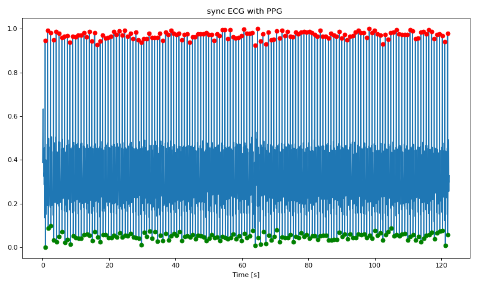 The results show the systolic PPG-peak discovery with using the ECG-Pan-Tomkins based method.
{kind=link}
{kind=link}
- src.vitalwave.basic_algos.derivative_filter(arr: ndarray, fs: int) ndarray[source]
Derivative filtering.
A derivative filter according to Pan-Tompkins algorithm.
- Parameters:
- arr
Data that will be filtered.
- fs
Sampling rate.
- Returns:
- arr_filt
Filtered data.
Examples
To highlight the the peaks and valleys of the original signal. The use of the derivative filter is linked with the moving_average_filter:
basic_algos.derivative_filter(arr=ecg, fs=200)
An example to have the functions working together is linked with it.
- src.vitalwave.basic_algos.extract_waveforms(arr: ndarray, fid_points: ndarray, mode: str, window: int | None = None) tuple[ndarray, ndarray][source]
Extracts waveforms from a signal using an array of fiducial points.
- Parameters:
- arr
Signal from which the waveforms are extracted.
- fid_points
Fiducial points used as a basis for extracting the waveforms.
- mode
How the fiducial points are used to extract the waveforms: - fid_to_fid: from one fiducial point to the next one. For example, from one PPG foot to another one. - nn_interval: the waveform is extracted around each fiducial point by taking half of the NN interval before and after. - window: the waveform is extracted around each fiducial point using a window. NOTE: In this case the parameter window must be defined.
- window
The number of samples to take around the fiducial points. The parameter must be odd. The number of samples taken from left and right is window // 2.
- Returns:
- waveforms
An array of extracted waveforms where each row corresponds to one waveform.
- mean_waveform
The calculated mean waveform.
Examples
from vitalwave.example_data import load_biosignal import matplotlib.pyplot as plt import numpy as np time, ecg = load_biosignal(type="ECG") time, ppg = load_biosignal(type="PPG") fs = (1 / np.mean(np.diff(time))) from vitalwave.basic_algos import extract_waveforms from vitalwave.peak_detectors import ecg_modified_pan_tompkins, msptd make_odd = lambda x: x + (x % 2 == 0) # calculate ECG r-peaks ecg_r_peaks = ecg_modified_pan_tompkins(ecg, fs=fs) # calculate ppg peaks and valleys - msptd (Modified Smoothed Peak Detection) ppg_msptd_peaks, ppg_msptd_feet = msptd(ppg, fs=fs) ppg_wfs, ppg_wfs_mean = extract_waveforms(ppg, ppg_msptd_feet, 'fid_to_fid') ecg_wfs1, ecg_wfs1_mean = extract_waveforms(ecg, ecg_r_peaks, 'window', int(make_odd(fs))) ecg_wfs2, ecg_wfs2_mean = extract_waveforms(ecg, ecg_r_peaks, 'nn_interval') # Plot the waveforms. def plot_wfs(wfs, wfs_mean, title): fig, ax = plt.subplots() for wf in wfs: ax.plot(wf, c='tab:blue', alpha=0.2) ax.plot(wfs_mean, c='tab:orange', linewidth=2) ax.set_title(title) fig.tight_layout() plt.show() plot_wfs(ppg_wfs, ppg_wfs_mean, 'PPG waveforms, feet to feet') plot_wfs(ecg_wfs1, ecg_wfs1_mean, 'ECG waveforms, window') plot_wfs(ecg_wfs2, ecg_wfs2_mean, 'ECG waveforms, NN interval')
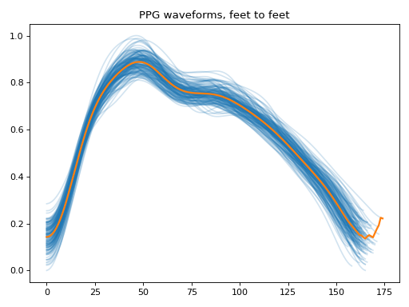 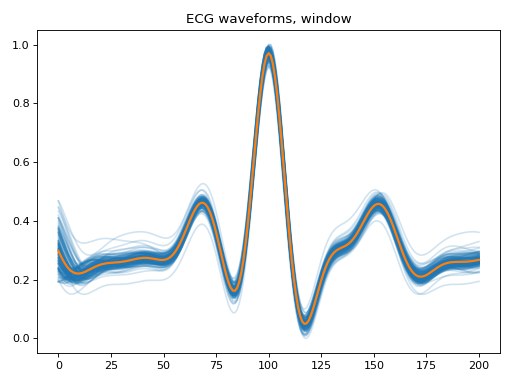 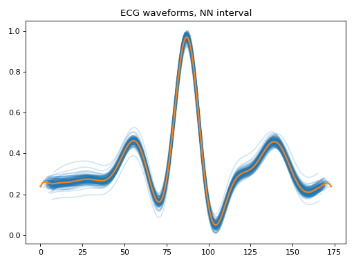 To extract the waveforms from the source-signal Fiducial point is required:
{kind=link}
{kind=link}
{kind=link}
{kind=link}
{kind=link}
{kind=link}
- src.vitalwave.basic_algos.filter_hr(heart_rates: ndarray, kernel_size: int = 7, hr_max_diff: int = 16, hr_min: int = 40, hr_max: int = 180) ndarray[source]
Filter instantaneous heart rates (HRs) with a median filter.
- Parameters:
- heart_rates
An array of instantaneous HRs [bpm].
- kernel_size
Kernel size used in the median filter.
- hr_max_diff
Maximum allowed HR difference [bpm].
- hr_min
Lowest allowed HR [bpm].
- hr_max
Highest allowed HR [bpm].
- Returns:
- heart_rates
An array of filtered instantaneous HRs.
Examples
To calculate the initial heart-beat validity based on an existing set of values.
import numpy as np from vitalwave.example_data import load_biosignal import matplotlib.pyplot as plt limits = [0, 1000] time, ecg = load_biosignal(type="ECG") fs = (1 / np.mean(np.diff(time))) from vitalwave.basic_algos import butter_filter, filter_hr from vitalwave import peak_detectors ecg_filt = butter_filter(ecg, 4, [0.5, 25], 'bandpass', fs=fs) ecg_r_peaks = peak_detectors.ecg_modified_pan_tompkins(ecg_filt, fs=fs) heart_rates = 60 / np.diff(time[ecg_r_peaks]) heart_rates_filt = filter_hr(heart_rates, 11) fig, ax = plt.subplots() ax.plot(heart_rates) ax.plot(heart_rates_filt) ax.set_xlabel('Time [s]') ax.set_ylabel('Heart rate [bpm]') ax.set_ylim(40, 200) fig.tight_layout() plt.show()
(
Source code,png,hires.png,pdf)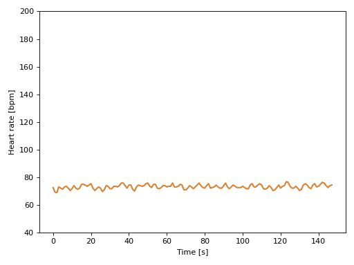 The results show normal heart-rate variability along with abnormal.
{kind=link}
{kind=link}
- src.vitalwave.basic_algos.homomorphic_hilbert_envelope(arr: ndarray, fs: int, order: int = 1, cutoff_fz: int = 8) ndarray[source]
The homomorphic_hilbert_envelope function is applied to enhance the waveform’s envelope. steps:
- Parameters:
- arr
signal designed for transformation
- fs
sample frequency
- order
sharpness of transition between passband and stopband
- cutoff_fz
The critical frequency or frequencies of the butter-filter
- Returns:
- filtered_envelope
Filtered envelope of the input signal.
Examples
To calculate the homomorphic Hilbert envelope; in order to produce a low-resolution mock-up signal of the original.
import numpy as np from vitalwave.example_data import load_biosignal import matplotlib.pyplot as plt limits = [0, 1000] time, ecg = load_biosignal(type="ECG") fs = (1 / np.mean(np.diff(time))) from vitalwave.basic_algos import homomorphic_hilbert_envelope ecg_hilbert = homomorphic_hilbert_envelope(arr=ecg, fs=fs) fig, axes = plt.subplots(2, 1, sharex=True) start, stop = limits axes[0].plot(time[start:stop], ecg[start:stop]) axes[1].plot(time[start:stop], ecg_hilbert[start:stop]) axes[0].set_title('ECG-signal') axes[1].set_title('with Hilbert Envelope') plt.show()
(
Source code,png,hires.png,pdf)
The end result is a signal with key features retained from the original signal
{kind=link}
{kind=link}
- src.vitalwave.basic_algos.min_max_normalize(arr: ndarray, min_val: float = 0.0, max_val: float = 1.0) ndarray[source]
Min-max normalizes an array.
- Parameters:
- arr
Signal which will be normalized.
- min_val
Minimum value of the resulting signal.
- max_val
Maximum value of the resulting signal.
- Returns:
- np.ndarray
Normalized version of arr.
Examples
To normalize the signal-values without using the standard-scaler based method:
basic_algos.min_max_normalize(arr = nd_ecg)
- src.vitalwave.basic_algos.moving_average_filter(arr: ndarray, window: int, type='triang') ndarray[source]
Moving window integration and moving average
- Parameters:
- arr
Data that will be integrated.
- window
Number of samples in the window.
- type
Valid types to call for are “triang” and “moving_avg”
- Returns:
- nd_array
Integrated data or moving average data
Examples
To produce a distorted signal highlighting the r-peak in the QRS-complex of the ECG.
import numpy as np from vitalwave.basic_algos import moving_average_filter from vitalwave.example_data import load_biosignal import matplotlib.pyplot as plt limits = [0, 2000] time, ecg = load_biosignal(type="ECG") fs = (1 / np.mean(np.diff(time))) nd_arr_triang = moving_average_filter(arr=ecg, window=int(fs * 0.15)) fig, ax = plt.subplots(1, 1, sharex=True) start, stop = limits ax.plot(time[start:stop], nd_arr_triang[start:stop]) ax.set_title('Smoothing') ax.set_xlabel('Time [s]') fig.tight_layout() plt.show()
(
Source code,png,hires.png,pdf)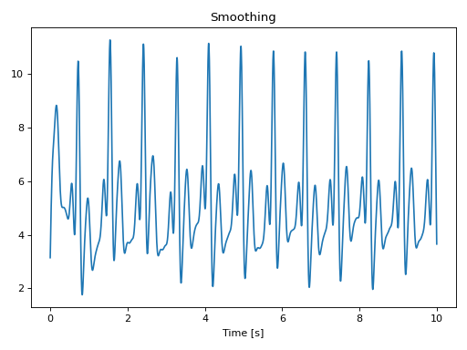 The example is linked with the derivative_filter function found in the same module.
{kind=link}
{kind=link}
- src.vitalwave.basic_algos.resample(timestamps: ndarray, arr: ndarray, timestamps_new: ndarray | None = None, dt: float | None = None) tuple[ndarray, ndarray][source]
Resample a time series to a new time axis.
- Parameters:
- timestamps
Original timestamps.
- arr
Original values.
- timestamps_new
Timestamps used as the basis in resampling. This must be in the same unit as timestamps.
- dt
Timestep of the new time series. This must be in the same unit as timestamps.
- Returns
- timestamps_new
An array of resampled timestamps.
- arr_new
An array of resampled values.
Examples
To setup new time based frequency to an existing signal:
basic_algos.resample(timestamps = ecg_ts, arr = ecg, ts_new = timestamps_new)
or by proving the \(\Delta\) time variable:
basic_algos.resample(timestamps = ecg_ts, arr = ecg, dt = 0.005)
- src.vitalwave.basic_algos.segmenting(arr: ndarray, window_size: int, overlap: int)[source]
Segment an array into overlapping frames.
- Parameters:
- arr
Input array to segment.
- window_size
Size of the window.
- overlap
Overlap between segments.
- Returns:
- frames
List of segmented frames.
- src.vitalwave.basic_algos.wavelet_transform_signal(arr: ndarray, dwt_transform, dlevels, cutoff_low, cutoff_high)[source]
Designed to work with noisy signal as a first-pass mechanism.
Performs wavelet decomposition on the input channel using pywt.wavedec, This returns a <list> of coefficients. The coefficients in the specified ranges are multiplied by zero to remove their contribution. Finally, a reconstructed signal is returned based on the wavelet coefficients.
- Parameters:
- arr
signal to process
- dwt_transform
Wavelet transformation function - good defualt: ‘bior4.4’
- dlevels
wavedeck: level parameter
- cutoff_low
the scale up to which coefficients will be zeroed
- cutoff_high
the scale from which coefficients will be zeroed
- Returns:
- np.ndarray
corrected_signal with inverse wavelet transform
Examples
To clean-up noisy signal prior to processing it with the Butterworth bandpass-filter. The example-code includes the linking with the Butterworth bandpass filter:
import numpy as np from vitalwave.basic_algos import butter_filter, min_max_normalize, wavelet_transform_signal from vitalwave.example_data import load_biosignal import matplotlib.pyplot as plt limits = [0, 1000] time, ecg = load_biosignal(type="ECG") fs = (1 / np.mean(np.diff(time))) nd_ecg_denoiced = wavelet_transform_signal(arr=ecg, dwt_transform='bior4.4', dlevels=9, cutoff_low=1, cutoff_high=9) ecg_filt_cleaned = min_max_normalize(butter_filter(arr=nd_ecg_denoiced, n=4, wn=[0.5, 8], filter_type='bandpass', fs=fs)) fig, axes = plt.subplots(2, 1, sharex=True) start, stop = limits axes[0].plot(time[start:stop], ecg[start:stop]) axes[1].plot(time[start:stop], ecg_filt_cleaned[start:stop]) axes[0].set_title('Filtered ECG') axes[1].set_title('wavedeck ') axes[1].set_xlabel('Time [s]') fig.tight_layout() plt.show()
(
Source code,png,hires.png,pdf)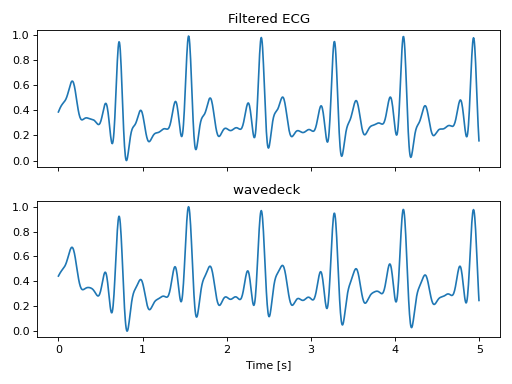
{kind=link}
{kind=link}
src.vitalwave.peak_detectors module
- src.vitalwave.peak_detectors.ampd(arr: ndarray, fs: int | None = None) ndarray[source]
Automatic multiscale-based peak detection (AMPD).
Based on the article: https://doi.org/10.3390/a5040588.
- Parameters:
- arr
The data for which the peaks are detected.
- fs
Sampling frequency of the data.
- Returns:
- peak_indices
Indices for the found peaks in the signal.
Examples
To find the peaks or valleys in a given signal:
from vitalwave.example_data import load_biosignal import matplotlib.pyplot as plt import numpy as np limits = [0,2000] time, ppg = load_biosignal(type="PPG") fs = (1 / np.mean(np.diff(time))) from vitalwave.peak_detectors import ampd # calculate ppg peaks and valleys - ampd (Automated Multi-scale Peak Detection) start, stop = limits ppg_ampd_peaks = ampd(ppg[start:stop], fs=int(fs)) fig, ax = plt.subplots() fig.set_size_inches(10, 6) ax.plot(time[start:stop], ppg[start:stop]) ax.plot(time[start:stop][ppg_ampd_peaks], ppg[start:stop][ppg_ampd_peaks], 'go') ax.set_xlabel('Time [s]') ax.set_title("Automatic multiscale-based peak detection (AMDP); for PPG") fig.tight_layout() plt.show()
(
Source code,png,hires.png,pdf)
{kind=link}
{kind=link}
- src.vitalwave.peak_detectors.ecg_modified_pan_tompkins(arr: ndarray, fs: int) ndarray[source]
Detects ECG R peaks using the Pan-Tompkins algorithm.
- Parameters:
- arr
ECG signal from which the R peaks are detected.
- fs
ECG signal sampling frequency.
- Returns:
- r_e
Examples
To find the r-peaks of ECG in a given signal:
from vitalwave.example_data import load_biosignal import matplotlib.pyplot as plt import numpy as np limits = [0,2000] time, ecg = load_biosignal(type="ECG") fs = (1 / np.mean(np.diff(time))) from vitalwave.peak_detectors import ecg_modified_pan_tompkins start, stop = limits ecg_r_peaks = ecg_modified_pan_tompkins(ecg[start:stop], fs=fs) fig, ax = plt.subplots() fig.set_size_inches(10, 6) ax.plot(time[:stop], ecg[:stop]) ax.plot(time[:stop][ecg_r_peaks], ecg[:stop][ecg_r_peaks], 'go') ax.set_xlabel('Time [s]') ax.set_title("ECG r-peaks using Pan Tompkins") fig.tight_layout() plt.show()
(
Source code,png,hires.png,pdf)
{kind=link}
{kind=link}
- src.vitalwave.peak_detectors.get_peaks_from_ppg_using_segments(arr: ndarray, fs: float, set_overlap: float, signal_integration_window: float = 0, segment: int = 3, get_peaks_only: bool = False)[source]
Extract PPG (Photoplethysmogram) peaks from raw data.
- Parameters:
- arr
Raw input signal.
- fs
Sampling frequency of the signal.
- set_overlap
Overlap between segments (used when segment > 0).
- signal_integration_window
Integration window for signal processing (default is 0, indicating no integration).
- segmentoptional
Number of segments to split the signal into (default is 3). Set to 0 for non-segmented processing.
- get_peaks_only:
used to get peaks only or both as sorted ndarray
- Returns:
- all_peaksnp.ndarray
Array containing all detected PPG peaks.
Examples
To find the peaks or valleys in a given signal:
from vitalwave.example_data import load_biosignal import matplotlib.pyplot as plt import numpy as np time, ppg = load_biosignal(type="PPG") fs = (1 / np.mean(np.diff(time))) from vitalwave.peak_detectors import get_peaks_from_ppg_using_segments ppg_peaks = get_peaks_from_ppg_using_segments(arr=ppg, fs=int(fs), set_overlap = (fs * 2), get_peaks_only=False) fig, ax = plt.subplots() fig.set_size_inches(10, 6) ax.plot(time, ppg) ax.plot(time[ppg_peaks], ppg[ppg_peaks], 'go') plt.show()
(
Source code,png,hires.png,pdf)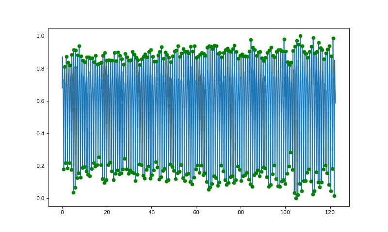
{kind=link}
{kind=link}
- src.vitalwave.peak_detectors.msptd(arr: ndarray, fs: int | None = None) tuple[ndarray, ndarray][source]
Modified automatic multiscale-based peak detection (AMPD).
Based on the Matlab implementation presented in the article: https://doi.org/10.1007/978-3-319-65798-1_39.
- Parameters:
- arr
The data for which the peaks and troughs are detected
- fs
Sampling frequency of the data.
- Returns:
- peaks
Indices for the found peaks.
- troughs
Indices for the found troughs.
Examples
To find the peaks and valleys in a given signal:
from vitalwave.example_data import load_biosignal import matplotlib.pyplot as plt import numpy as np limits = [0,2000] time, ppg = load_biosignal(type="PPG") fs = (1 / np.mean(np.diff(time))) from vitalwave.peak_detectors import msptd start, stop = limits # calculate ppg peaks and valleys - msptd (Modified Smoothed Peak Detection) ppg_msptd_peaks, ppg_msptd_feet = msptd(ppg[start:stop], fs=fs) fig, ax = plt.subplots() fig.set_size_inches(10, 6) ax.plot(time[:stop], ppg[:stop]) ax.plot(time[:stop][ppg_msptd_peaks], ppg[:stop][ppg_msptd_peaks], 'go') ax.plot(time[:stop][ppg_msptd_feet], ppg[:stop][ppg_msptd_feet], 'ro') ax.set_xlabel('Time [s]') ax.set_title("Modified AMDP Peak Detection; for PPG") fig.tight_layout() plt.show()
(
Source code,png,hires.png,pdf)
{kind=link}
{kind=link}
src.vitalwave.features module
- src.vitalwave.features.compute_meandist(diff_rri)[source]
Computes the mean distance between successive elements in a given time series.
- Parameters:
- diff_rri
he input time series data representing the successive differences of R-R intervals.
- Returns:
- float:
The calculated mean distance value.
- src.vitalwave.features.get_egc_interval_p_t(arr, p_points: ndarray, t_points: ndarray, fs: int = 200, max_len=50, threshold=0.0001)[source]
Calculate the time intervals between Q and T points in an ECG signal.
- Parameters:
- arr
ECG signal
- p_points
A list of indices representing the P points in the ECG signal.
- t_points
A list of indices representing the T points in the ECG signal.
- fs
The sampling frequency of the ECG signal in Hz. Default is 200 Hz.
- max_lenint, optional
Scroll-distance to discover the valleys. Default is 50.
- thresholdfloat, optional
The threshold for identifying valleys. Default is 0.0001.
- Returns:
- list
A list of time intervals in seconds between the Q and T points in the ECG signal.
Examples
To find the interval between p and t-peaks ratios in a given signal:
from vitalwave.example_data import load_biosignal import matplotlib.pyplot as plt import numpy as np limits = [0,2000] time, ecg = load_biosignal(type="ECG") fs = (1 / np.mean(np.diff(time))) from src.vitalwave.features import get_egc_interval_p_t from src.vitalwave import peak_detectors from src.vitalwave.experimental import get_ecg_signal_peaks ecg_r_peaks = peak_detectors.ecg_modified_pan_tompkins(ecg, fs) nd_ecg_with_peaks, nd_ecg_with_peak_types = get_ecg_signal_peaks(arr=ecg, r_peaks=ecg_r_peaks, fs=fs) egc_p_peaks = np.asarray(np.where(nd_ecg_with_peak_types == 1.0))[0] egc_t_peaks = np.asarray(np.where(nd_ecg_with_peak_types == 5.0))[0] interval = get_egc_interval_p_t(arr=ecg, p_points=egc_p_peaks, t_points=egc_t_peaks) fig, ax = plt.subplots() ax.boxplot(interval) plt.show()
(
Source code,png,hires.png,pdf)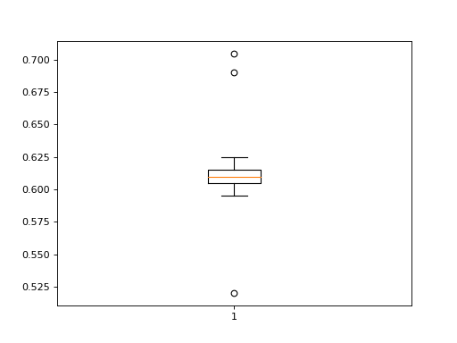
{kind=link}
{kind=link}
- src.vitalwave.features.get_egc_interval_q_s(arr: ndarray, q_points: ndarray, s_points: ndarray, fs: int = 200, max_len=50, threshold=0.0001)[source]
Calculate the time intervals between Q and S points in an ECG signal.
- Parameters:
- arr
ECG signal
- q_points
A list of indices representing the Q points in the ECG signal.
- s_points
A list of indices representing the S points in the ECG signal.
- fs
The sampling frequency of the ECG signal in Hz. Default is 200 Hz.
- max_lenint, optional
Scroll-distance to discover the valleys. Default is 50.
- thresholdfloat, optional
The threshold for identifying valleys. Default is 0.0001.
- Returns:
- list
A list of time intervals in seconds between the Q and S points in the ECG signal.
Examples
To find the interval between q and s-peak ratios in a given signal:
from vitalwave.example_data import load_biosignal import matplotlib.pyplot as plt import numpy as np limits = [0,2000] time, ecg = load_biosignal(type="ECG") fs = (1 / np.mean(np.diff(time))) from src.vitalwave.features import get_egc_interval_q_s from src.vitalwave import peak_detectors from src.vitalwave.experimental import get_ecg_signal_peaks ecg_r_peaks = peak_detectors.ecg_modified_pan_tompkins(ecg, fs) nd_ecg_with_peaks, nd_ecg_with_peak_types = get_ecg_signal_peaks(arr=ecg, r_peaks=ecg_r_peaks, fs=fs) egc_q_notch = np.asarray(np.where(nd_ecg_with_peak_types == 2.0))[0] egc_s_notch = np.asarray(np.where(nd_ecg_with_peak_types == 4.0))[0] interval = get_egc_interval_q_s(arr=ecg, q_points=egc_q_notch, s_points=egc_s_notch) fig, ax = plt.subplots() ax.boxplot(interval) plt.show()
(
Source code,png,hires.png,pdf)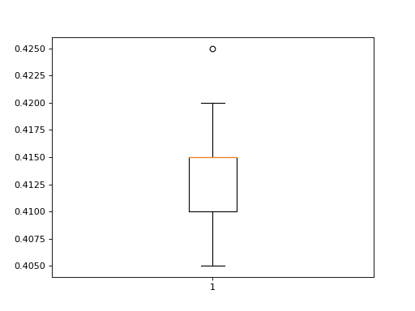
{kind=link}
{kind=link}
- src.vitalwave.features.get_egc_interval_q_t(arr, q_points, t_points, fs=200, max_len=50, threshold=0.0001)[source]
Calculate the time intervals between Q and T points in an ECG signal.
- Parameters:
- arr
ECG signal
- q_points
A list of indices representing the Q points in the ECG signal.
- t_points
A list of indices representing the T points in the ECG signal.
- fs
The sampling frequency of the ECG signal in Hz. Default is 200 Hz.
- max_lenint, optional
Scroll-distance to discover the valleys. Default is 50.
- thresholdfloat, optional
The threshold for identifying valleys. Default is 0.0001.
- Returns:
- list
A list of time intervals in seconds between the Q and T points in the ECG signal.
Examples
To find the interval between q and t-peaks ratios in a given signal:
from vitalwave.example_data import load_biosignal import matplotlib.pyplot as plt import numpy as np limits = [0,2000] time, ecg = load_biosignal(type="ECG") fs = (1 / np.mean(np.diff(time))) from src.vitalwave.features import get_egc_interval_q_t from vitalwave import peak_detectors from src.vitalwave.experimental import get_ecg_signal_peaks ecg_r_peaks = peak_detectors.ecg_modified_pan_tompkins(ecg, fs) nd_ecg_with_peaks, nd_ecg_with_peak_types = get_ecg_signal_peaks(arr=ecg, r_peaks=ecg_r_peaks, fs=fs) egc_q_peaks = np.asarray(np.where(nd_ecg_with_peak_types == 2.0))[0] egc_t_peaks = np.asarray(np.where(nd_ecg_with_peak_types == 5.0))[0] interval = get_egc_interval_q_t(arr=ecg, q_points=egc_q_peaks, t_points=egc_t_peaks) fig, ax = plt.subplots() ax.boxplot(interval) plt.show()
(
Source code,png,hires.png,pdf)
{kind=link}
{kind=link}
- src.vitalwave.features.get_global_egc_features(r_peaks: ndarray, fs: int = 100, min_rr_interval: int = 50)[source]
Calculate global ECG (Electrocardiogram) features from R-peak indices.
- Parameters:
- r_peaks
List of R-peak indices in the ECG signal.
- fs
Sampling frequency of the ECG signal in Hz.
- min_rr_interval
Minimum RR interval in milliseconds, used for computing pNNxx.
- Returns:
- object
containing scalar variables
- src.vitalwave.features.get_ppg_peak_amplitude_ratio(arr: ndarray, feets: ndarray, systolic_peaks: ndarray, diastolic_peaks: ndarray) list[source]
Calculate the amplitude ratio between systolic and diastolic peaks in an array.
- amplitude_ratio = get_amplitude_ratio(arr = nd_ppg_peaks[“filt_ppg_signal”], feets = ppg_feets,
systolic_peaks=ppg_systolic, diastolic_peaks=ppg_diastolic)
- Parameters:
- arr
An array containing the data.
- feets
An array of indices representing the feets (or footprints) of specific events.
- systolic_peaks
An array of indices representing the systolic peaks.
- diastolic_peaks
An array of indices representing the diastolic peaks.
- Returns:
- list
A list of amplitude ratios calculated as arr[systolic_peaks[index]] / arr[diastolic_peaks[index]].
Examples
To find the amplitude ratios of the systolic and diastolic peaks in a given signal:
from vitalwave.example_data import load_biosignal import matplotlib.pyplot as plt import numpy as np limits = [0,2000] time, ppg = load_biosignal(type="PPG") fs = (1 / np.mean(np.diff(time))) from vitalwave.features import get_ppg_peak_amplitude_ratio from vitalwave.peak_detectors import msptd from src.vitalwave.experimental import derive_ppg_signal_peaks ppg_peaks, ppg_feets = msptd(ppg, fs=fs) nd_ppg_with_peaks, nd_ppg_with_peak_types = derive_ppg_signal_peaks(arr=ppg, ppg_peaks=ppg_peaks, ppg_feets=ppg_feets, window_length=9, polyorder=5) ppg_feets = np.asarray(np.where(nd_ppg_with_peak_types == 1.0))[0] ppg_systolic = np.asarray(np.where(nd_ppg_with_peak_types == 2.0))[0] ppg_diastolic = np.asarray(np.where(nd_ppg_with_peak_types == 4.0))[0] l_ratio = get_ppg_peak_amplitude_ratio(arr=ppg, feets=ppg_feets, systolic_peaks=ppg_systolic, diastolic_peaks=ppg_diastolic) fig, ax = plt.subplots() ax.boxplot(l_ratio) plt.show()
(
Source code,png,hires.png,pdf)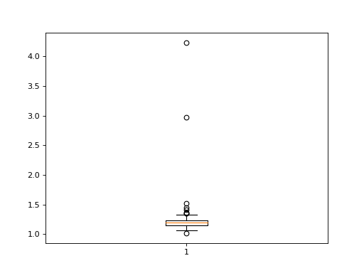
{kind=link}
{kind=link}
- src.vitalwave.features.get_ppg_peak_integral_ratio(arr: ndarray, feets: ndarray, dicrotic_valley: ndarray, problems: ndarray) list[source]
Calculate the integral ratio between systolic and diastolic intervals in an array.
- integrals = get_integral_ratio(arr = nd_ppg_peaks[“filt_ppg_signal”], feets = ppg_feets,
dicrotic_valley = ppg_dicrotic, problems = [121])
- Parameters:
- arr
An array containing the data.
- feets
An array of indices representing the feets (or footprints) of specific events.
- dicrotic_valley
An array of indices representing the dicrotic valleys.
- problems
An array of indices representing problematic data points to be excluded from calculations.
- Returns:
- list
A list of integral ratios calculated as the volume of systolic to diastolic peak.
Examples
To find the volume-ratios of the systolic and diastolic peaks in a given signal:
from vitalwave.example_data import load_biosignal import matplotlib.pyplot as plt import numpy as np limits = [0,2000] time, ppg = load_biosignal(type="PPG") fs = (1 / np.mean(np.diff(time))) from src.vitalwave.features import get_ppg_peak_integral_ratio from vitalwave.peak_detectors import msptd from src.vitalwave.experimental import derive_ppg_signal_peaks ppg_peaks, ppg_feets = msptd(ppg, fs=fs) nd_ppg_with_peaks, nd_ppg_with_peak_types = derive_ppg_signal_peaks(arr=ppg, ppg_peaks=ppg_peaks, ppg_feets=ppg_feets, window_length=9, polyorder=5) ppg_feets = np.asarray(np.where(nd_ppg_with_peak_types == 1.0))[0] ppg_dicrotic = np.asarray(np.where(nd_ppg_with_peak_types == 3.0))[0] l_ratio = get_ppg_peak_integral_ratio(arr=ppg, feets=ppg_feets, dicrotic_valley=ppg_dicrotic, problems=[121]) fig, ax = plt.subplots() ax.boxplot(l_ratio) plt.show()
(
Source code,png,hires.png,pdf)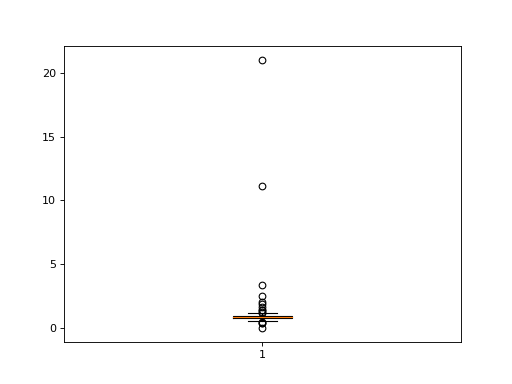
{kind=link}
{kind=link}
src.vitalwave.signal_quality module
- src.vitalwave.signal_quality.quality_index_for_waveform(arr: ndarray, r_peaks: ndarray, type: str = 'scalar') list[source]
Compute the correlation coefficient between each individual waveform with the average template.
- Parameters:
- arr
The ECG signal.
- r_peaks
An array containing the indices of detected R-peaks in the ECG signal.
- Returns:
- list
containing correlation coefficients and p-values for each individual waveform compared to the average template.
Examples
To find the r-peaks of ECG in a given signal:
from vitalwave.example_data import load_biosignal import matplotlib.pyplot as plt import numpy as np limits = [0,2000] time, ecg = load_biosignal(type="ECG") fs = (1 / np.mean(np.diff(time))) from vitalwave.signal_quality import quality_index_for_waveform from vitalwave import peak_detectors ecg_r_peaks = peak_detectors.ecg_modified_pan_tompkins(ecg, fs) l_correlation = quality_index_for_waveform(arr=ecg, r_peaks=ecg_r_peaks, type="waveform") fig, ax = plt.subplots() ax.boxplot(l_correlation) plt.show()
(
Source code,png,hires.png,pdf)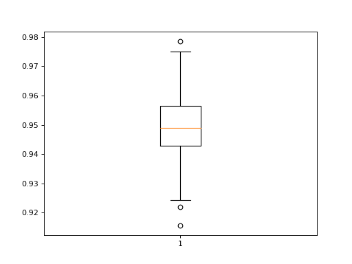
{kind=link}
{kind=link}
src.vitalwave.experimental module
- src.vitalwave.experimental.derive_ppg_signal_peaks(arr: ndarray, ppg_peaks: ndarray, ppg_feets: ndarray, window_length: int = 9, polyorder: int = 5) tuple[source]
Derive and categorize PPG signal peaks based on waveforms and peak types.
- Parameters:
- arr
The PPG signal.
- ppg_peaks
Indices of detected peaks in the PPG signal.
- ppg_feets
Indices of calculated foot points.
- window_length
Window length for the Savitzky-Golay filter, by default 9.
- polyorder
Polynomial order for the Savitzky-Golay filter, by default 5.
- Returns:
- nd_ppg_with_peaks
1-D binary array indicating the presence of identified dicrotic and diastolic peaks in the PPG signal.
- nd_ppg_with_peak_types
1-D array categorizing the identified dicrotic and diastolic peaks in the PPG signal: - 1: feet - 2: Systolic peak - 3: Dicrotic notch - 4: Diastolic peak
Examples
To find the r-peaks of ECG in a given signal:
from vitalwave.example_data import load_biosignal import matplotlib.pyplot as plt import numpy as np limits = [0,2000] time, ppg = load_biosignal(type="PPG") fs = (1 / np.mean(np.diff(time))) from src.vitalwave.experimental import derive_ppg_signal_peaks from vitalwave.peak_detectors import msptd ppg_signal = ppg ppg_peaks, ppg_feets = msptd(ppg, fs=fs) heights_peaks = ppg[ppg_peaks] heights_feets = ppg[ppg_feets] plt.figure(figsize=(10, 5)) plt.plot(ppg) plt.scatter(ppg_peaks, heights_peaks, marker='o', color='green') plt.scatter(ppg_feets, heights_feets, marker='o', color='red') plt.show()
(
Source code,png,hires.png,pdf)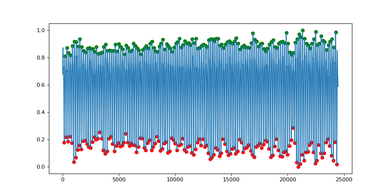 nd_ppg_with_peaks, nd_ppg_with_peak_types = derive_ppg_signal_peaks(arr=ppg, ppg_peaks=ppg_peaks, ppg_feets=ppg_feets, window_length=9, polyorder=5) plt.figure(figsize=(10, 5)) plt.plot(ppg) ecg_peaks = np.where(nd_ppg_with_peaks == 1.0)[0] heights_peaks = ppg[ecg_peaks] plt.scatter(ecg_peaks, heights_peaks, marker='o', color='green') plt.scatter(ppg_feets, heights_feets, marker='o', color='red') plt.show()

{kind=link}
{kind=link}
{kind=link}
{kind=link}
- src.vitalwave.experimental.do_ppg_from_raw_signal(arr: ndarray, fs: float, signal_integration_window: float = 0, segment: int = 2, threshold: float = 2, return_as_segment=False)[source]
Process PPG data from raw signals, segmenting and detecting anomalies.
- Parameters:
- arrnp.ndarray
Raw PPG signal.
- fsfloat
Sampling frequency.
- signal_integration_windowfloat, optional
Integration window size (default is 0). If greater than 0, the function will perform area under the curve integration.
- segmentint, optional
Number of segments to divide the signal into (default is 2). If set to 0, the function will process the entire array as a single segment.
- thresholdfloat, optional
Threshold for anomaly detection (default is 2). Anomalies are detected based on the differences between consecutive peaks. Peaks with differences greater than this threshold are considered anomalies.
- return_as_segmentbool, optional
If False (default), returns a single array with segments (or the complete signal) without anomalies. If True, returns individual segments along with any detected anomalies.
- Returns:
- ppg signallist of np.ndarray
Segmented or complete PPG signal.
- peaks_alllist of np.ndarray
Detected peaks.
Notes
If segmentation is enabled (segment > 0), the function divides the signal into multiple segments and detects peaks within each segment. Anomalies are detected based on the differences between consecutive peak indices. Segments without anomalies are returned.
If segmentation is disabled (segment = 0), the entire input signal is processed as a single segment.
- ppg_data, peak_indices = do_ppg_from_raw_signal(arr = nd_ppg[“ppg_1_ir”], fs = fs, segment = 6,
threshold = 3, return_as_segment=True)
Examples
To preprocess, validate, and find the peaks or valleys in a ppg signal:
from vitalwave.example_data import load_biosignal import matplotlib.pyplot as plt import numpy as np limits = [0,2000] time, ppg = load_biosignal(type="PPG") fs = (1 / np.mean(np.diff(time))) from vitalwave.experimental import do_ppg_from_raw_signal ppg_data_all, peak_indices_all = do_ppg_from_raw_signal(arr=ppg, fs=fs, segment=6, threshold=3, return_as_segment=False) heights_peaks_all = ppg_data_all[peak_indices_all] ppg_data, peak_indices = do_ppg_from_raw_signal(arr=ppg, fs=fs, segment=3, threshold=3, return_as_segment=True) heights_peaks = ppg_data[0][peak_indices[0]] fig, axes = plt.subplots(2, 1, figsize=(10, 8)) axes[0].plot(ppg_data_all) axes[0].scatter(peak_indices_all, heights_peaks_all, marker='o', color='green') axes[0].set_title("PPG Data as complete (Segment = 3)") axes[1].plot(ppg_data[0]) axes[1].scatter(peak_indices[0], heights_peaks, marker='o', color='green') axes[1].set_title("PPG Data as segments (Segment = 6)") plt.tight_layout() plt.show()
(
Source code,png,hires.png,pdf)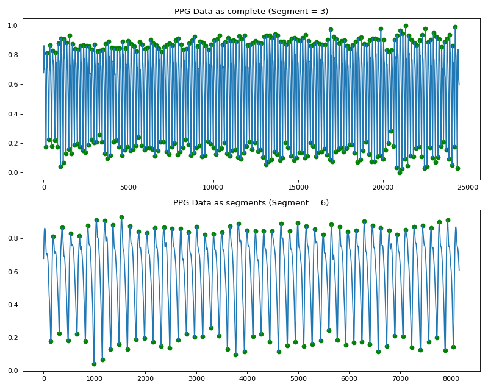
{kind=link}
{kind=link}
- src.vitalwave.experimental.get_ecg_signal_peaks(arr: ndarray, r_peaks: ndarray, fs: int) tuple[source]
Extracts and categorizes ECG signal peaks, including R, P, Q, S, and T peaks.
- Parameters:
- ecg_signal
array representing the ECG signal.
- r_peaks
array containing R-peak locations in samples.
- fs
Sampling frequency of the ECG signal.
- Returns:
- nd_ecg_with_peaks
binary array indicating the presence of identified peaks in the ECG signal.
- nd_ecg_with_peak_types
array categorizing the identified peaks in the ECG signal: - 1: P-peak - 2: Q-peak - 3: R-peak - 4: S-peak - 5: T-peak
Examples
To find the r-peaks of ECG in a given signal:
from vitalwave.example_data import load_biosignal import matplotlib.pyplot as plt import numpy as np limits = [0,2000] time, ecg = load_biosignal(type="ECG") fs = (1 / np.mean(np.diff(time))) from vitalwave import peak_detectors from vitalwave.experimental import get_ecg_signal_peaks ecg_r_peaks = peak_detectors.ecg_modified_pan_tompkins(ecg, fs) heights_peaks = ecg[ecg_r_peaks] plt.figure(figsize=(10, 5)) plt.plot(ecg) plt.scatter(ecg_r_peaks, heights_peaks, marker='o', color='green') plt.show()
(
Source code,png,hires.png,pdf)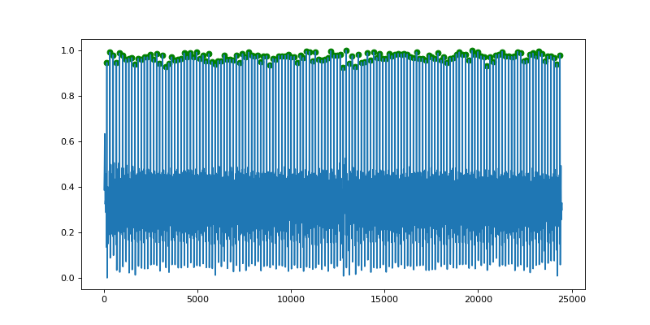 nd_ecg_with_peaks, nd_ecg_with_peak_types = get_ecg_signal_peaks(arr=ecg, r_peaks=ecg_r_peaks, fs=fs) plt.figure(figsize=(10, 5)) plt.plot(ecg) ecg_peaks = np.where(nd_ecg_with_peaks == 1.0)[0] heights_peaks = ecg[ecg_peaks] plt.scatter(ecg_peaks, heights_peaks, marker='o', color='green') plt.show()
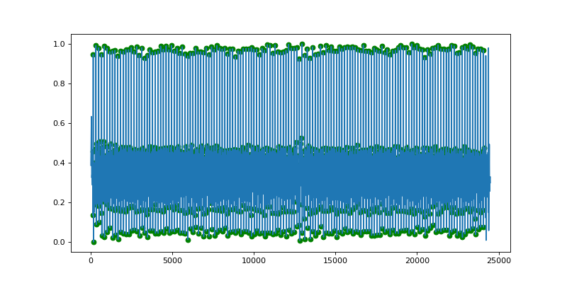
{kind=link}
{kind=link}
{kind=link}
{kind=link}